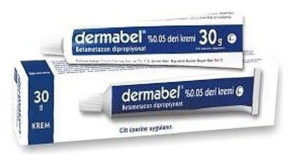

Dermabel %0,05 Krem, 15 g

Ne için kullanılır
KT · Bölüm 1 DERMABEL ağzı plastik kapakla kapatılmış, 15 g ve 30 g krem içeren alüminyum tüpler içerisinde kullanıma sunulmaktadır. DERMABEL, kortikosteroidlere cevap veren cilt rahatsızlıklarında (deride belli bölgelerde kızarıklık, kaşıntı ve döküntü ile seyreden bazı dermatit türleri, terleme bozukluğu gibi) dışarıdan cilde sürülerek kullanılır. İçerdiği betametazon ciltteki rahatsızlık sonucu ortaya çıkan iltihabın, kaşıntı ve kızarıklık gibi belirtilerin giderilmesinde oldukça güçlü bir etkiye sahiptir.